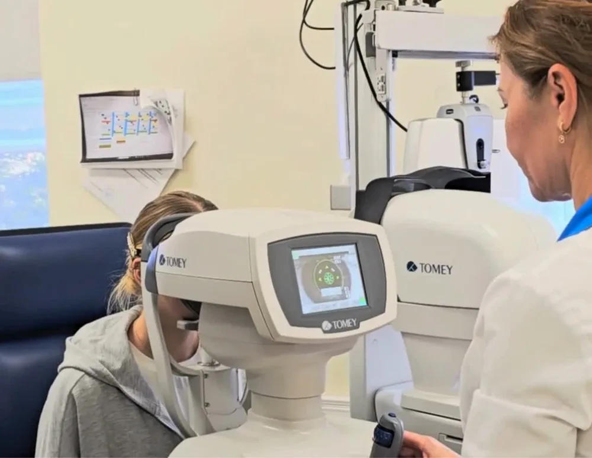
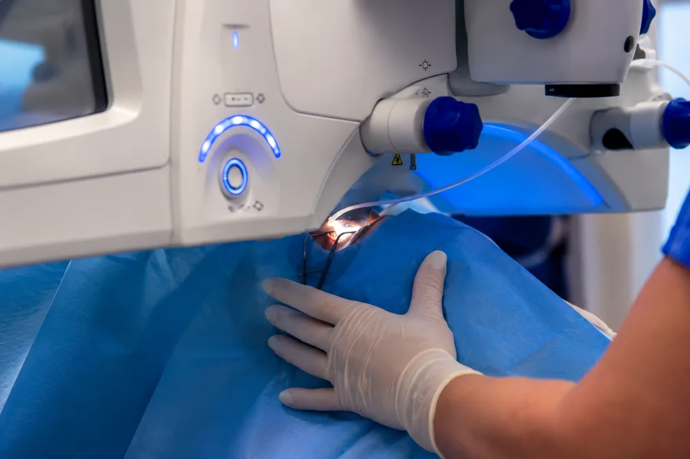
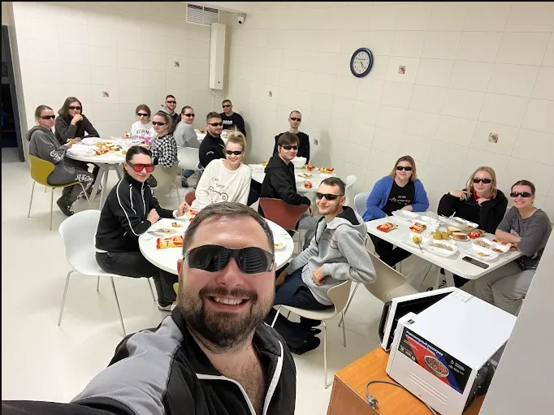
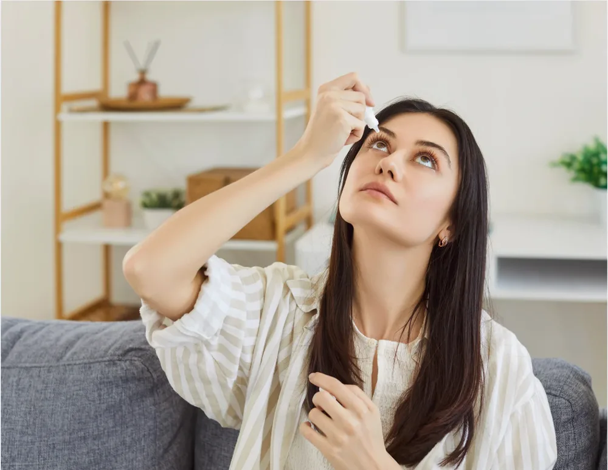
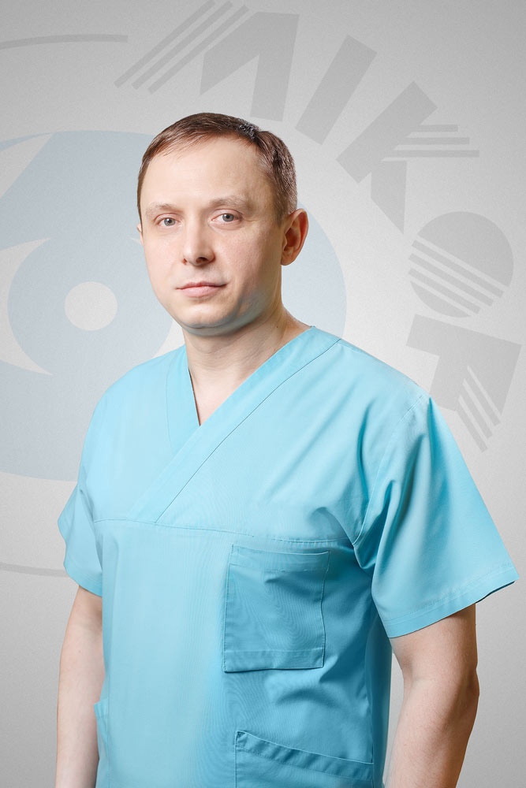
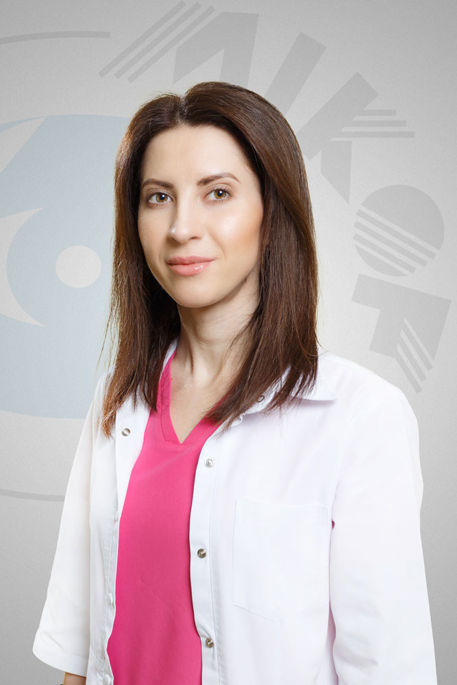

Этап 1 · ДиагностикаОбследование и решение
Полное обследование зрения, расчёт параметров и консультация хирурга. Вместе решаем, подходит ли вам SMILE Pro.
SMILE Pro — это последнее слово в развитии безлоскутной методики SMILE. Фемтосекундный лазер ZEISS VisuMax 800 за считанные секунды формирует внутри роговицы тонкую линзу-лентикулу, что позволяет извлечь её через микродоступ размером всего в 2 миллиметра. Биомеханика роговицы остаётся практически нетронутой.
Скорость нового уровня
Лазер VisuMax 800 работает на частоте 2 МГц — в четыре раза быстрее предыдущего поколения.
Минимальная инвазивность
Без формирования роговичного лоскута. Микродоступ сохраняет прочность роговицы.
Точность AI-ассистентов
CentraLign и OcuLign автоматически центрируют зрачок и учитывают ось астигматизма.
Быстрое восстановление
На следующий день можно вернуться к работе, вождению и повседневным делам.
Если просто — это самая современная и безопасная лазерная коррекция зрения на сегодняшний день. Её создала немецкая компания Carl Zeiss, известная во всём мире своей оптикой и медицинскими приборами. Методика SMILE применяется уже больше десяти лет, а SMILE Pro — её улучшенная версия: точнее, мягче и быстрее.
Главное отличие — скорость. Новый лазер VisuMax 800 работает в четыре раза быстрее предыдущих моделей. На каждый глаз уходит всего около 8 секунд. За это время аппарат аккуратно формирует внутри роговицы тончайший слой ткани, который врач удаляет через крошечный разрез всего 2 мм. Зрение проясняется почти сразу, а уже на следующий день большинство пациентов возвращаются к привычной жизни — за руль, на работу, к экрану смартфона.

Этап 1 · ДиагностикаПолное обследование зрения, расчёт параметров и консультация хирурга. Вместе решаем, подходит ли вам SMILE Pro.

День операцииБезболезненно, под капельной анестезией. Лазер VisuMax 800 работает около 8 секунд на глаз. Домой можно уже через час.

День 1На следующий день — контрольный осмотр. Большинство пациентов уже видят чётко и возвращаются к работе и за руль.

Дни 2–7Капли по схеме и гигиена зрения. Временно стоит воздержаться от бассейна, сауны и контактного спорта.
Зрение окончательно стабилизируется, возвращается полная активность — спорт, экраны, путешествия.
Чёткое зрение надолго — без очков и контактных линз.
Записаться на диагностикуБезболезненно. Без шва, без долгого нахождения под лазером.
Лентикула удаляется через микродоступ, биомеханика роговицы сохраняется максимально полно.
Безлоскутная технология и оборудование Carl Zeiss — менее 1% риска побочных эффектов по статистике.
Корректирует близорукость до -10D и астигматизм до -5D. Зрение остаётся стабильным многие годы.
Уже на следующее утро после операции — спорт, вождение, работа за компьютером.
Клиника MIKOF первая в регионе предлагает коррекцию зрения на лазере ZEISS VisuMax 800.
Параметр |
ФРК |
LASIK |
Femto-LASIK |
SMILE Pro |
|---|---|---|---|---|
| Используемый лазер | Эксимерный | Эксимерный | VisuMax800 + Эксимерный | VisuMax800 |
| Воздействие оборудования | Поверхностное, не все слои роговицы сохраняются | Лоскут формируется микрокератомом, воздействие эксимерного лазера внутри роговицы, все слои сохраняются | Лоскут формируется на VisuMax800, воздействие эксимерного лазера внутри роговицы, все слои сохраняются | Без лоскута, VisuMax800 формирует лентикулу внутри роговицы, сохраняя все слои |
| Длительность лазера | 10–30 сек | 10–30 сек | Менее 10 сек VisuMax800 / 10–30 сек Эксимерный | менее 10 сек |
| Комфорт | Низкий | Средний | Средний | Максимальный |
| Восстановление | Длительное | Быстрое, с ограничениями | Быстрое, с ограничениями | Быстрое, минимум ограничений |
SMILE Pro — не замена, а дополнение к уже применяемым в «Microchirurgia ochiului» методам: LASIK и другим современным технологиям лазерной коррекции. Это даёт врачу возможность подобрать оптимальный подход индивидуально — по итогам диагностики и очной консультации.
Вся коррекция занимает 5–10 минут на один глаз. Само воздействие лазера длится всего 8 секунд.
Подготовка пациента
Обрабатываем область вокруг глаза, закапываем анестезирующие капли, устанавливаем мягкий векорасширитель.
Автоматическая центровка
ИИ-системы CentraLign и OcuLign выравнивают глаз по оптической оси и учитывают ось астигматизма.
Формирование лентикулы
За 8 секунд фемтосекундный лазер формирует тонкий диск-лентикулу и микродоступ 2 мм для её извлечения.
Извлечение лентикулы
Хирург аккуратно выводит лентикулу через микродоступ. Целостность роговицы сохраняется.
Завершение
Промываем операционную полость, снимаем векорасширитель, выдаём схему капель и рекомендации.
Полное обследование взрослого пациента. Цена за оба глаза.
700 MDL / 650 MDL онлайн-запись
В обследование входит:
Лазерная коррекция зрения. Цена указана за один глаз.
23 000 MDL
Этапы процедуры:
Прайс действителен с 01.04.2026. Точная стоимость определяется по итогам диагностики.

Офтальмолог-хирург

Офтальмолог
опыта и доверия
обследованных пациентов
от диагностики до лечения
узкого профиля
проведённых операций
стабильная работа клиники
Процедура практически безболезненна благодаря капельной анестезии. Большинство пациентов чувствуют только лёгкое давление в течение 8 секунд воздействия лазера.
Чёткость возвращается уже в первые часы после операции и значительно повышается на следующий день, что позволяет вернуться к работе, вождению и бытовым делам. Стабилизация наступает через 2–4 недели.
Да. SMILE Pro позволяет проводить коррекцию обоих глаз в один день — это удобно и сокращает общий период реабилитации.
SMILE Pro выполняется на новом лазере VisuMax 800 с частотой 2 МГц — это в четыре раза быстрее предыдущего поколения и обеспечивает более точное центрирование за счёт ИИ-ассистентов.
Да, SMILE Pro корректирует астигматизм до -5 диоптрий. Система OcuLign автоматически учитывает торсионное смещение оси.
Уже на следующий день. Рекомендуем делать паузы каждый час и соблюдать гигиену зрения первые недели.